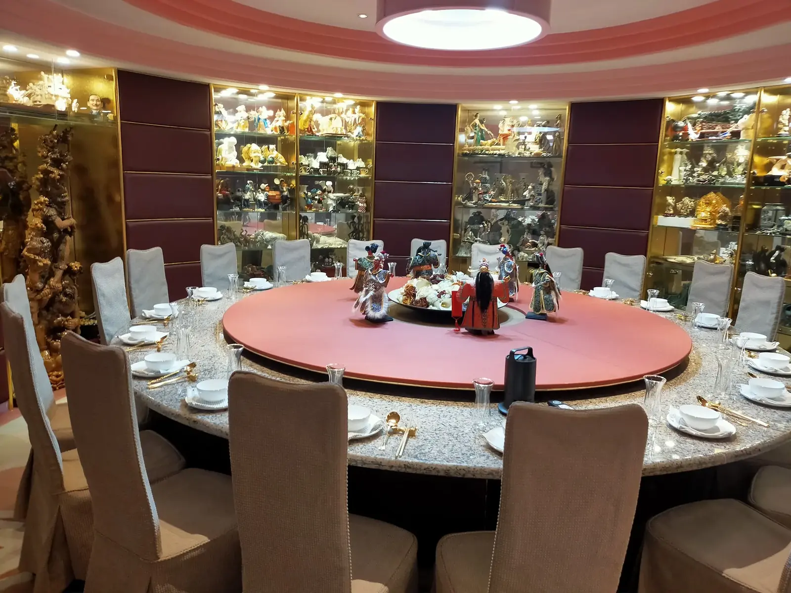

到府私廚、外燴、餐廳包廂，三種都能辦一場聚餐，差別在於「場地由誰決定、菜單有多彈性、人數與隱私」。人數不多、重視隱私與客製菜單，到府私廚通常最合適；人數很多、要集中出餐，外燴或辦桌更有效率；不想處理場地與備料，餐廳包廂最省事。
| 場地 | 到府私廚：自宅、公司、招待所、遊艇等客戶指定場地；外燴：客戶指定場地；餐廳包廂：餐廳場地 |
|---|---|
| 菜單彈性 | 到府私廚：依場合、人數與飲食需求單場設計；外燴：常以固定套餐或自助形式呈現；餐廳包廂：依餐廳既有菜單 |
| 隱私 | 到府私廚：在自己的空間，賓客資訊不外流；外燴：視場地而定；餐廳包廂：視包廂與時段 |
| 常見人數 | 到府私廚：2 人小型家宴到 30 人企業接待；外燴：數十人到更多；餐廳包廂：依包廂容量 |
| 客戶要準備的 | 到府私廚：場地與基本水電；外燴：場地與動線；餐廳包廂：預約即可 |
生日、壽宴、彌月、求婚、小型家族聚會，或董事長宴請、客戶接待這類需要隱私的場合，到府私廚的優勢是主廚到現場烹調，菜單為單一場合量身規劃，餐後也有人負責清潔。舒苑的到府私廚由金帽獎主廚林東立領軍，6–8 人小型家宴 NT$38,000 起，實際金額以報價為準。
人數很多、需要集中大量出餐的尾牙春酒或大型活動，外燴或辦桌更有效率，舒苑也承接企業外燴與尾牙春酒。若只是想簡單聚餐、不想處理場地，餐廳包廂最方便。重點是先確認人數、預算與你最在意的是隱私、菜單還是便利，再決定形式。
不完全相同。到府私廚偏向小型、客製、重視隱私的單場餐宴；外燴偏向較大人數、集中出餐。舒苑兩種服務都有，可依人數與場合建議合適的形式。
不需要。舒苑團隊自行攜帶烹飪器具與餐盤，餐後負責清潔，客戶提供場地與基本水電即可。
可以，舒苑服務規模從 2 人小型家宴到 30 人企業接待；實際起價依人數與菜單而定，詳見價格頁。
提供活動日期、人數與場地，我們將提供最適合的到府私廚方案。